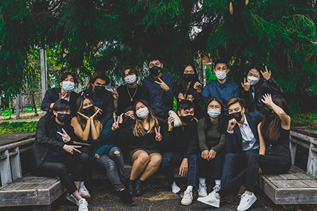
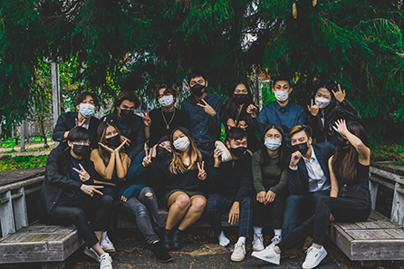

I am a junior at the University of Massachusetts at Amherst majoring in Computer Science and minoring in Information Technology. I am passionate in bridging the gap between users and applications in technology. On campus, I spend my time involving myself in the student community through leadership positions such as the Vice President of the UMass Esports Club and the Media Chair: Photography for the Asian American Student Association. I am currently interested in Web/App development as well as UI/UX Research. In my free time, I enjoy taking photos, rock climbing, as well as participating in anything esports related.
 

Photos taken by Jeffrey Zou & Aaron Cheng